Na sprzedaż oferuję zadbaną Mazdę 6 z 2017 roku (I rejestracja 02.2018r) z dynamicznym i niezawodnym silnikiem benzynowym 2.5 o mocy 192 KM, współpracującym z automatyczną skrzynią biegów. Auto bardzo komfortowe, idealne zarówno do miasta, jak i na dłuższe trasy. Auto w kolorze czerwonym (Soul Red) w najbogatszej wersji wyposażenia z aktualnym przebiegiem 135 tyś km. Niecały rok temu nałożona była ceramika (4 letnia). Skórzana tapicerka jest impregnowana dwa razy w roku.
Wyposażenie:
Samochód w pełni sprawny, nie wymaga żadnego wkładu finansowego. Regularnie serwisowany w ASO (Mazda Wróbel Długołęka - ostatni serwis 06.2025). W zeszłym roku wymienione były tarcze oraz klocki (przód i tył), cały wydech końcowy (Ulter) oraz akumulator w ASO.
Auto pochodzi z polskiego salonu i jestem jego drugim właścicielem. Auto posiada ważny przegląd (do 02.2027) oraz ubezpieczenie OC/AC.
Auto gotowe do jazdy, możliwość sprawdzenia w dowolnym serwisie lub stacji diagnostycznej. Komplet dokumentów, drugi komplet kluczyków. Możliwość sprawdzenia całej historii serwisowej w aplikacji Mazdy.
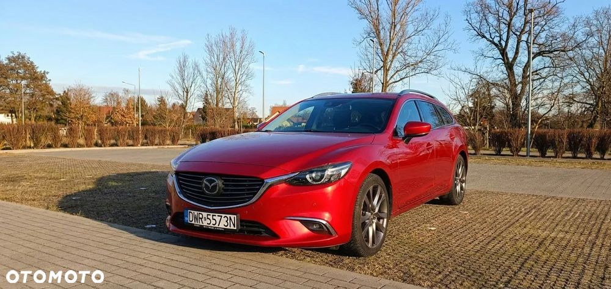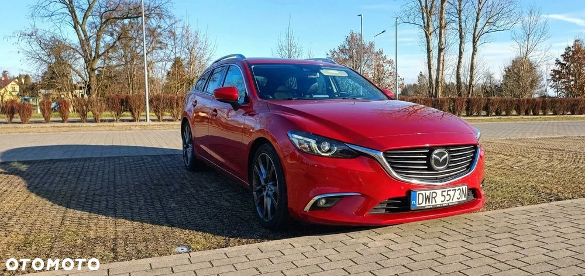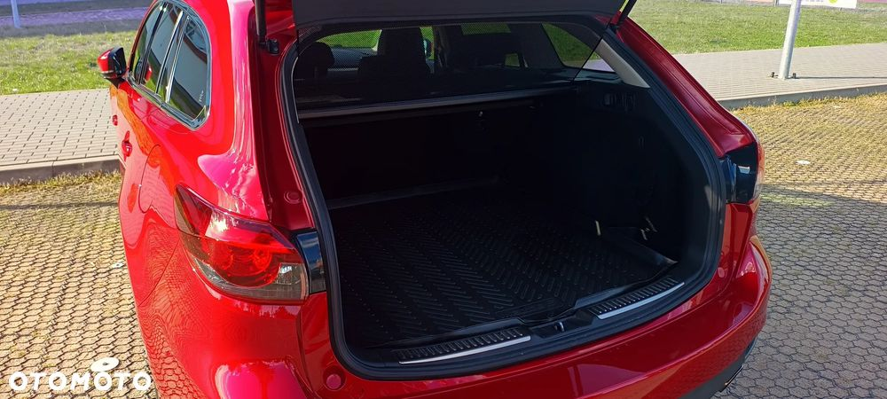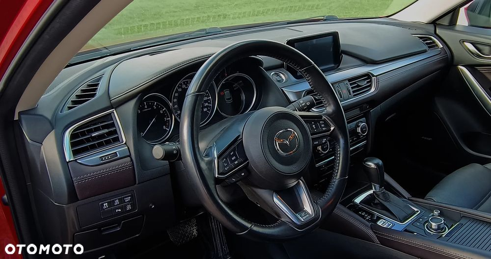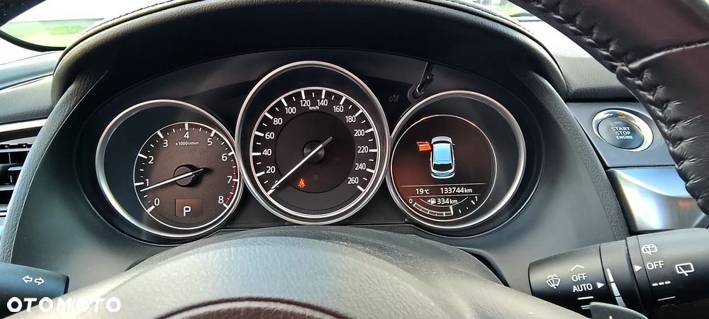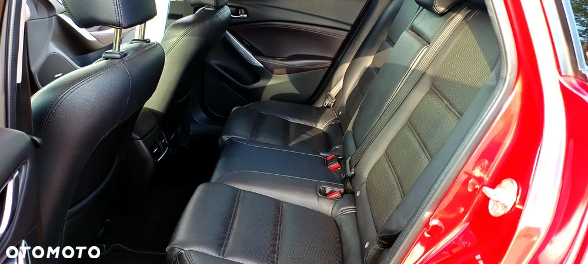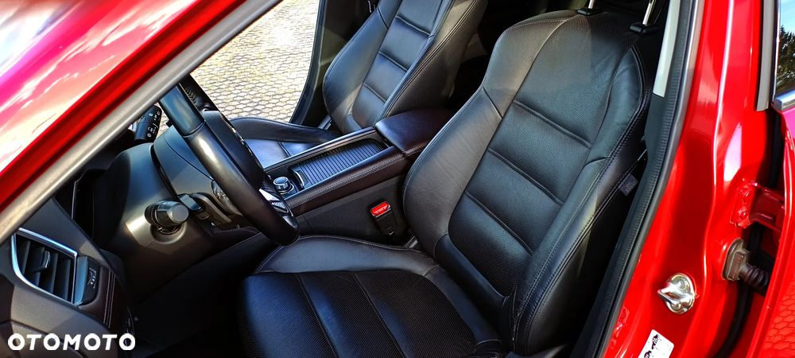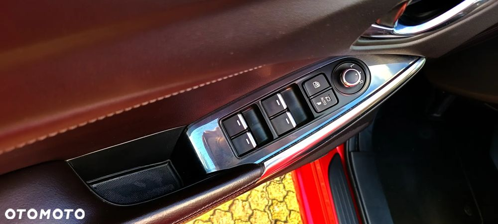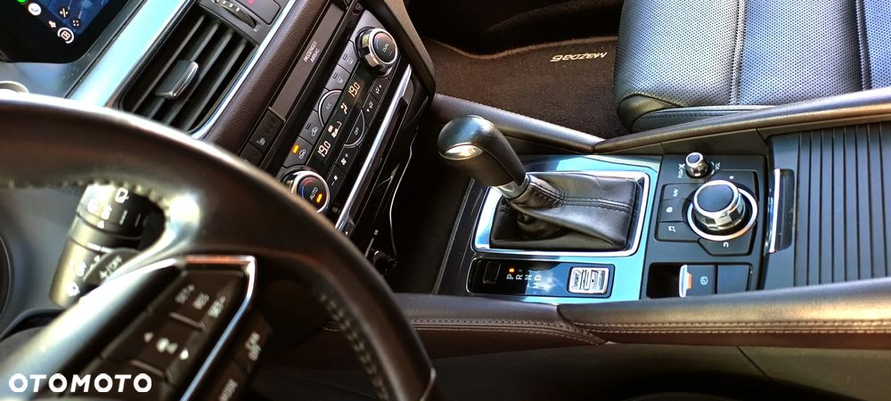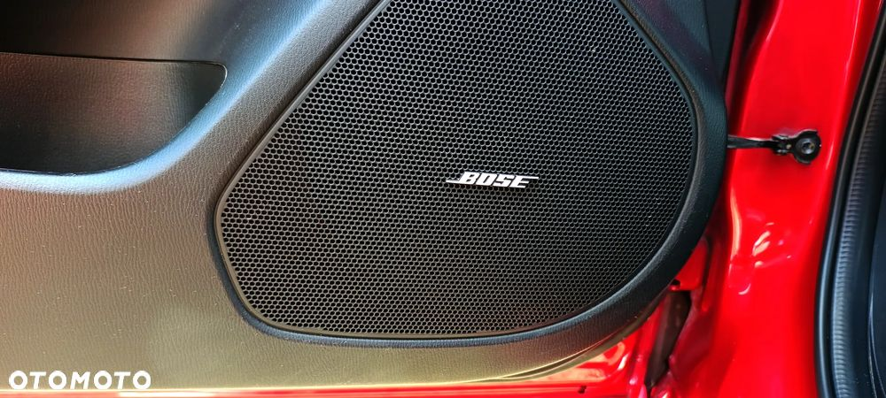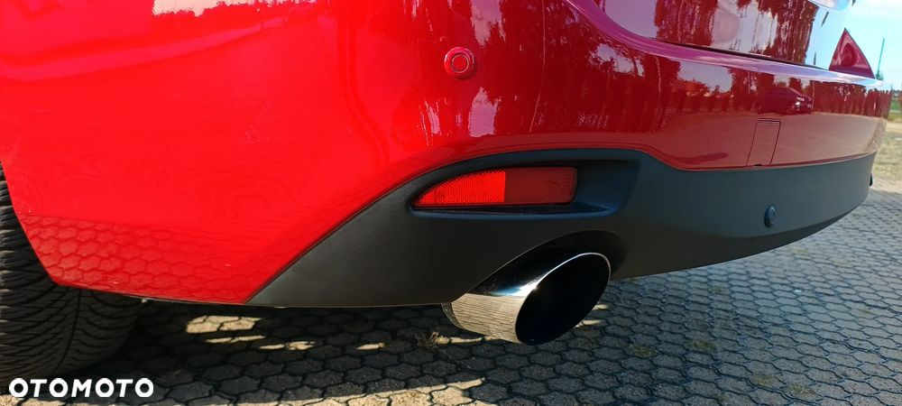